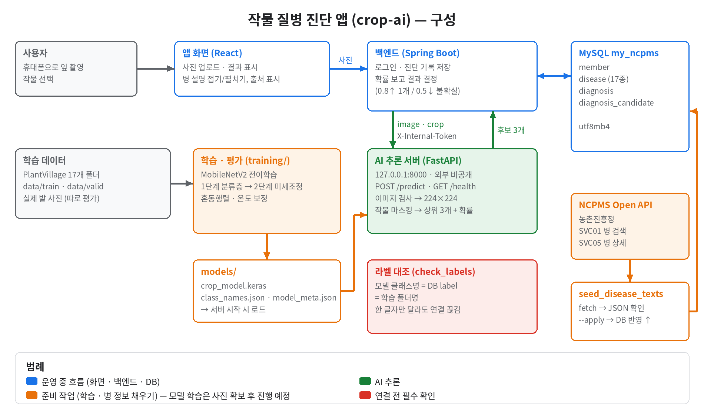
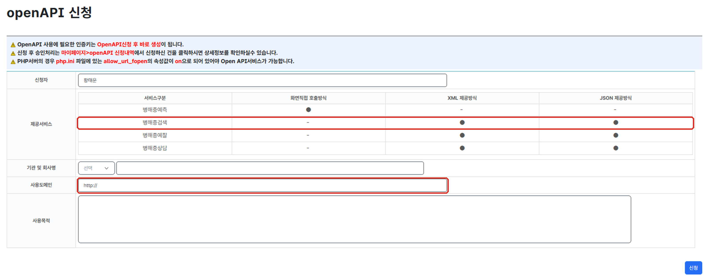
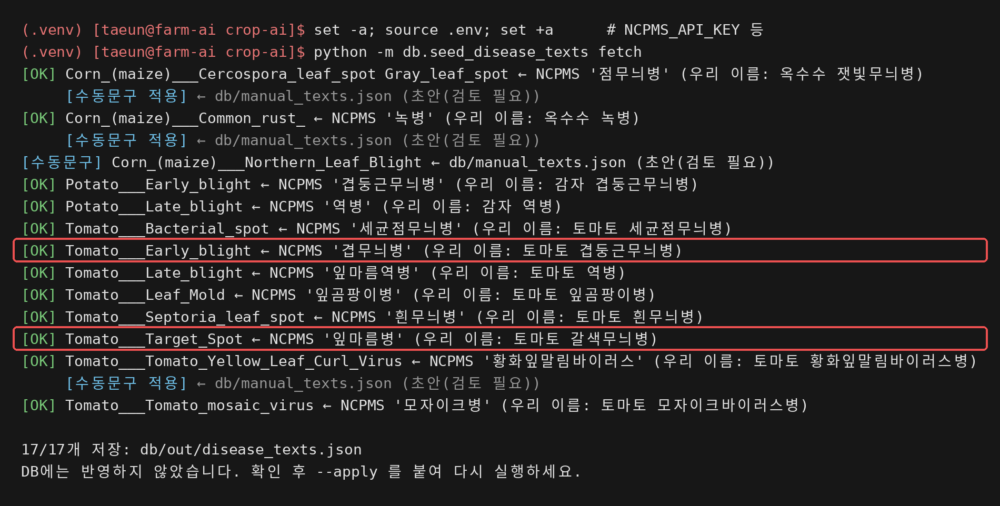
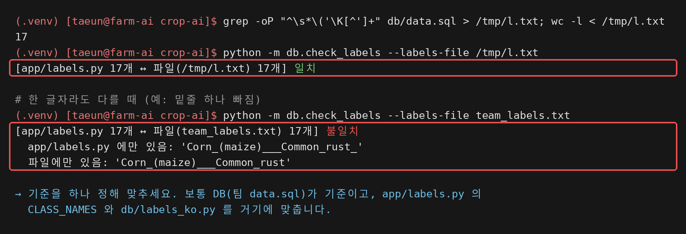
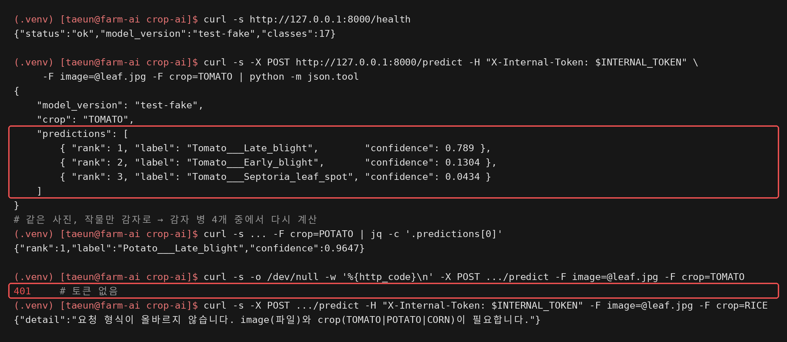

개인 프로젝트 · 스마트팜 하위 프로젝트
작물 질병 진단 AI·DB (crop-ai)
개인 프로젝트서버·DB 완성모델 학습 전
토마토·감자·옥수수 잎 사진을 올리면 가능성 높은 병 3개와 확률을 알려주는 진단 앱입니다. 앱 화면(React), 백엔드(Spring Boot), AI 추론 서버, 병 정보 DB까지 직접 만들었고, 이 페이지는 그중 AI 서버와 DB를 중심으로 정리했습니다.
아직 학습용 사진을 확보하지 못해 실제 학습된 모델은 없습니다. 아래 진단 화면은 테스트용 가짜 모델(test-fake)로 서버 동작을 확인한 결과이며, 진단 정확도는 아직 말할 수 없습니다.
1. 하는 일

| 폴더 | 내용 |
|---|---|
app/ | FastAPI 서버. /predict, /health, 이미지 전처리, 작물 마스킹, 17개 라벨 기준표 |
training/ | MobileNetV2 2단계 전이학습(train.py), 정확도·혼동행렬·온도 보정(evaluate.py) |
db/ | 테이블 설계, NCPMS 클라이언트, 병 설명 채우기 도구, 라벨 대조 도구 |
scripts/ | DB 백업·복원 (공유용은 회원 정보 제외) |
tests/ | 자동 테스트 34개 (서버 7, 예측 로직 5, DB·NCPMS 22) |
2. NCPMS Open API 신청
병 설명과 방제법은 농촌진흥청 국가농작물병해충관리시스템(NCPMS)의 Open API에서 받습니다. 회원가입 후 마이페이지 → openAPI 신청에서 신청하면 인증키가 바로 생성됩니다.

| 항목 | 내용 |
|---|---|
| 사용한 서비스 | SVC01 병 검색(작물명·병명 → sickKey), SVC05 병 상세(증상·발생 환경·방제 방법) |
| 사용도메인 | 등록하지 않은 곳에서 호출하면 ERR_105(미등록 도메인). 로컬에서 통과해도 운영 서버에서 다시 확인 필요 |
| 인증키 보관 | .env의 NCPMS_API_KEY에만 저장, 저장소에는 .env.example만 올림 |
| 이용 조건 | 공공누리 제2유형 — 출처 표시 필수, 상업적 이용 금지. 앱 화면에 "농촌진흥청 NCPMS" 출처 표시 |
응답이 XML일 때와 JSON일 때가 섞여 있어, 클라이언트는 첫 글자로 형식을 판단해 둘 다 읽게 만들었습니다. 본문에 섞인 <br>·이스케이프된 태그(<b>)·CDATA도 정리해서 DB에는 줄바꿈만 남긴 순수 텍스트로 넣습니다.
3. 병 정보 DB 채우기
모델이 쓰는 라벨은 PlantVillage 데이터셋 폴더명(영문)이고, NCPMS 병명은 한글이라 1:1로 맞지 않습니다. 작물명 + 한글 병명으로 먼저 찾고, 없으면 영문 병명으로 찾은 뒤, 사람이 확인한 결과를 sickkey_map.json에 고정했습니다.

--apply를 붙여야 DB에 반영 (API 키는 환경변수)| 출처 | 건수 | 내용 |
|---|---|---|
| NCPMS 원문 | 12종 | 병 설명·방제법 |
| 고정 문구 | 4종 | 정상 잎 3종(병 API 대상 아님), 점박이응애(해충이라 병 API 대상 아님) |
| 사람이 쓴 초안 | 4건 | NCPMS에 없거나 비어 있는 칸. 옥수수 그을음무늬병 등 — 검토 전이라 서비스 사용 금지 표시 |
빨간 상자처럼 NCPMS 병명과 화면에 쓸 이름이 다른 경우(토마토 Early blight = NCPMS "겹무늬병", Target spot = NCPMS "잎마름병")가 있어, 화면용 한글 병명 3개는 확정 전으로 남겨 두었습니다.

my_ncpms.disease 17행. 테이블은 member, disease, diagnosis, diagnosis_candidate 4개# 백업 (공유용: 모든 테이블 구조 + disease 데이터만, 회원 정보 제외)
DB_USER=ncpms DB_NAME=my_ncpms bash scripts/backup_db.sh
# 복원 (utf8mb4 지정으로 한글 깨짐 방지)
DB_USER=ncpms DB_NAME=my_ncpms bash scripts/restore_db.sh db/backup/my_ncpms.sql4. 라벨 대조 — 한 글자만 달라도 연결이 끊김
진단 결과의 label로 DB의 병 정보를 찾기 때문에, 모델 클래스명 · DB disease.label · 학습 폴더명 세 곳이 글자 하나까지 같아야 합니다. 밑줄 개수나 공백 하나만 달라도 결과가 병 정보와 연결되지 않아서, 대조 도구를 만들어 학습·연동 전에 먼저 돌립니다.

5. 추론 서버 (FastAPI)
| 처리 | 내용 |
|---|---|
| 이미지 검사 | 깨진 파일 확인, jpg·png만 허용, 휴대폰 사진 회전(EXIF) 보정, 224×224로 맞춤. 최대 10MB(초과 시 413) |
| 작물 마스킹 | 사용자가 고른 작물의 병만 남기고 확률을 다시 계산 → 토마토 사진이 감자 병으로 나오는 일 방지 |
| 응답 | 항상 상위 3개 + 확률. "0.8 이상이면 1개만, 0.5 미만이면 불확실" 같은 판단은 백엔드가 담당 |
| 내부 인증 | X-Internal-Token을 상수 시간 비교(hmac.compare_digest), 불일치 시 401 |
| 노출 범위 | 127.0.0.1에서만 대기, 외부 포트 열지 않음. 백엔드만 같은 서버·내부망에서 호출 |

uvicorn app.main:app --host 127.0.0.1 --port 8000 # models/ 에 학습 결과가 있어야 시작
curl http://127.0.0.1:8000/health6. 모델 학습 · 평가 학습 전
학습·평가 코드는 완성했지만 학습용 사진을 아직 확보하지 못해 실행 전입니다.
| 단계 | 내용 |
|---|---|
| 1단계 | ImageNet으로 학습된 MobileNetV2는 고정하고 마지막 분류층만 학습 |
| 2단계 | 상위 30개 층을 풀어(BatchNorm은 고정) 학습률 1e-5로 미세 조정. 클래스별 사진 수 차이는 가중치로 보정, 증강(뒤집기·회전·밝기)은 모델 안에 포함 |
| 데이터 누수 방지 | PlantVillage는 같은 잎을 여러 장 찍은 사진이라, 검증용 폴더(--val-dir)를 따로 두지 않으면 점수가 부풀려짐 |
| 평가 | top-1·top-3 정확도, 혼동행렬, 작물 마스킹 적용 정확도. 실험실 배경 사진과 실제 밭 사진을 따로 평가 |
| 확률 보정 | 온도 보정(temperature scaling)으로 "확률 90%"가 실제로 90% 맞도록 조정해 model_meta.json에 저장 |
python -m training.train --train-dir data/train --val-dir data/valid
python -m training.evaluate --data-dir data/valid --fit-temperature
python -m training.evaluate --data-dir data/real_photos --tag real # 실제 사진 성적표7. 테스트

| 파일 | 검사 내용 |
|---|---|
test_api.py (7) | 정상 예측, 작물에 따라 결과 변경, 깨진 이미지·GIF 400, 잘못된 작물 400, health, 토큰 검사 |
test_predictor.py (5) | 라벨 17개, 선택 작물만 반환, 옥수수 4개 중 상위 3개, 온도 보정 효과 |
test_db.py (22) | XML/JSON 파싱, 오류 코드 처리, 한글·영문 병명 매칭(다른 작물 병 제외 등), 라벨 대조, 수동 문구 적용 |
8. 남은 일과 주의
| 순서 | 할 일 |
|---|---|
| 1 | 학습용 사진 확보(PlantVillage 등) → 모델 학습·평가 |
| 2 | 실제 휴대폰으로 찍은 잎 사진을 모아 따로 정확도 확인 |
| 3 | 백엔드와 요청·응답 형식 확정 후 연결 테스트 |
| 4 | 사람이 쓴 초안 4건과 화면용 한글 병명 3개 검토·확정 |
| 5 | 사용자가 "진단이 틀림"으로 표시한 사진으로 재학습, NCPMS 지역별 예찰 정보 연동 |
병 설명은 공공데이터를 가공한 참고용입니다. 약제 안내에는 "사용 전 제품 라벨과 지역 농업기술센터에 확인" 문구를 함께 표시합니다.